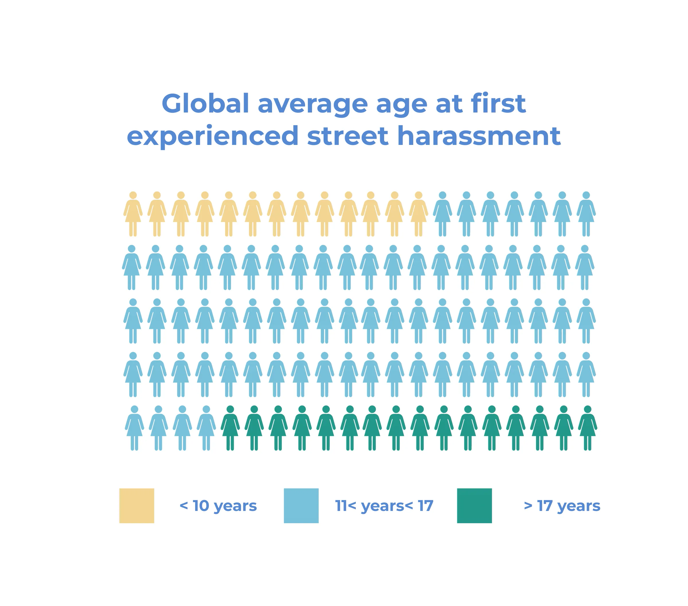
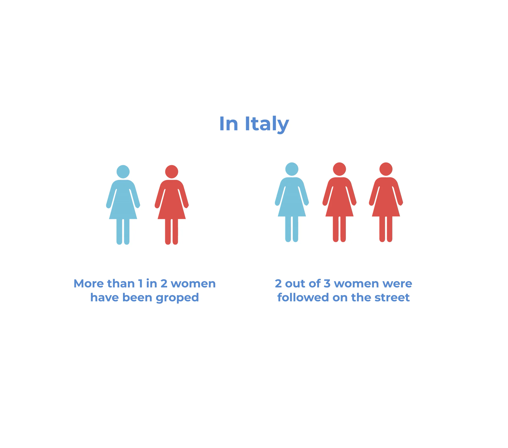
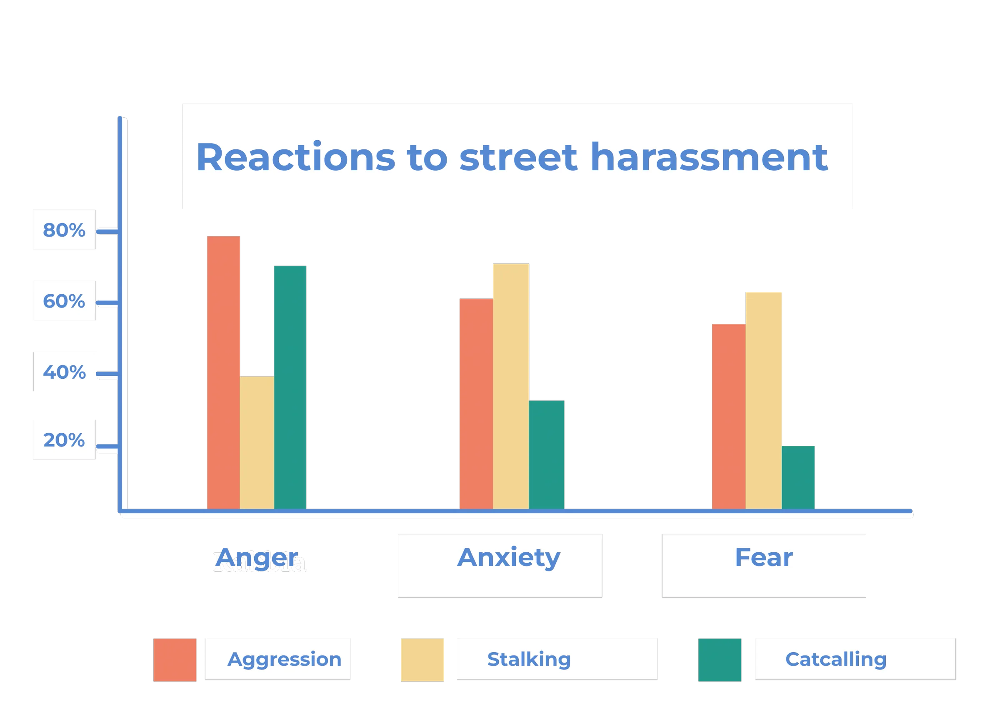
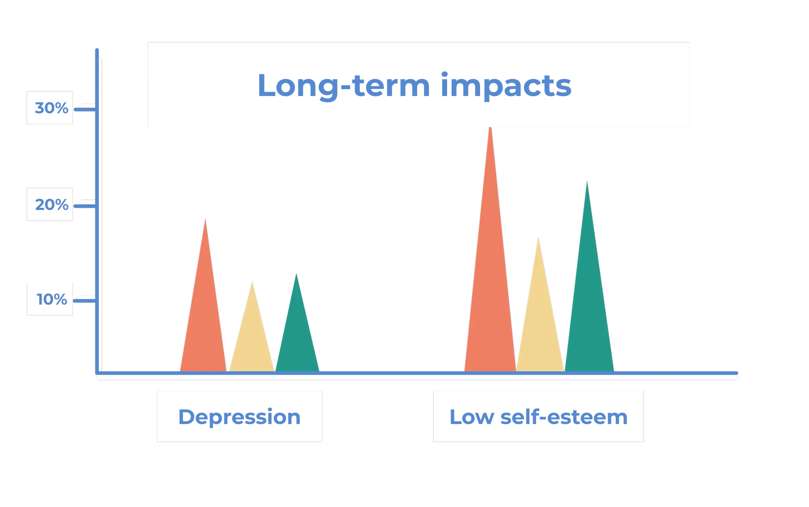

So Fur So Good
2022
A board game about catcalling, disguised as a cat world tour.
So Fur So Good is a 4-player board game developed as a master's thesis to raise awareness about catcalling. By experiencing firsthand episodes in a playful way, players reflect on the issue without negative emotions. A game that turns design into a tool for social change.
Role
Researcher, Game Designer, Graphic Designer, UI/UX Designer
Scope
Master's degree thesis project
Read time
5 minutes
Process
01
Research
For this project I decided to explore the topic of street harassment and catcalling, issues often underestimated despite their serious impact. Studies reveal alarming data: according to a 2018 Istat report, over a third of women in Italy avoid going out at night due to fear, while an international study by Hollaback! and Cornell University found that 84% of women experience catcalling before the age of 17.


These experiences can lead to anxiety, low self-esteem, and major lifestyle changes, such as avoiding certain places or even turning down job opportunities.
Despite its consequences, catcalling is frequently dismissed as harmless or even flattering. This lack of awareness motivated me to design a game to change this.


02
Prototype
About the game
In So Fur So Good players embark on a whimsical Cat World Tour, traveling through famous cat-related locations worldwide. While the theme is lighthearted, the game subtly raises awareness about street harassment, encouraging discussion in an accessible and playful way.
Game goal
The aim of the game is not to reach the end first but to collect as many positive experiences as possible. Players step into the shoes of travelers exploring new places, tasting local delicacies, and gathering souvenirs, while also encountering moments that reflect real-life experiences of catcalling. By facing these challenges together, players learn how verbal harassment affects individuals and how to respond with awareness and support.
Characters
The game features seven unique travelers, and unlike stereotypical portrayals often seen in media, these characters are diverse in age, ethnicity, and style, emphasizing that harassment is not dictated by appearance or clothing. Each traveler has a different profession, granting them unique abilities that shape their journey.
Tiles
The board features seven different types of tiles, each marked by a distinct color. Only one player can stop on a tile at a time, except when two or more of the same type are placed vertically adjacent, allowing multiple players to land there simultaneously.
Airport
The airport marks the start and end of each region. All players begin their journey here and regroup at the airport before moving to the next destination.
Food stall
At market stalls, players can buy local foods. Upon landing, they draw three Market cards, choose one to buy, and return the rest. Foods belong to Local Foods or Desserts sets, earning points, with bonuses for completing regional or full-game collections.
Landmark
Landmarks are famous cultural or historical sites where players can buy souvenirs (Postcards, Keychains, or Accessories). Like market stalls, players draw three Souvenir cards, choose one to buy, and return the rest. Souvenirs earn points, with bonuses for completing regional or full-game sets.
Bank
The bank is where players can withdraw coins. Landing here grants 3 coins. There's no coin limit, but banks are rare, so spending wisely is key.
Cat shelter
Shelters are safe places to bring stray cats that couldn't be fed. Here, they receive care and reward the player. Visiting a shelter also grants 3 kibble, which can be used to feed other cats along the journey.
Cat sanctuary
The sanctuary is a special tile where players meet a Wise Cat and receive the Wise Cat's Protection card, which adds +1 to defense rolls against catcallers. Only the first player to land here receives the card, and each Wise Cat offers empowering advice to help players deal with catcalling.
Encounter
Encounters are the most common and unpredictable tiles. Landing here means drawing an Encounter card, which can be:
- A stray cat: players can feed it using kibble to earn rewards like Souvenir or Local Food cards, coins, or the chance to steal a card from another player. If lacking kibble, they can carry one cat to a shelter.
- A catcaller: the card shows the attack's strength, a harassment phrase, and its potential emotional impact. Players roll a defense die, winning earns points, while losing increases their reaction level. Nearby players can assist by rolling their own defense die.
Board region
The game features five regions, Italy, the Netherlands, Egypt, Russia, and Japan, chosen for their historical or narrative relevance to the theme. Future expansions can add more regions, as the board is modular. Players can also choose to play fewer regions depending on the time available, while maintaining the same gameplay mechanics.
Rome, Italy
Rome is home to many stray cats, particularly around the Sacred Area of Torre Argentina, where they began to gather in 1929 after the excavation of ancient ruins. Today, volunteers care for over 250 cats, many of which are sick or disabled.
Il Cairo, Egypt
Cats were revered in ancient Egypt, transitioning from domestic animals to sacred beings, and eventually deities. Their influence is seen in numerous statues, monuments, and everyday items, reflecting their importance in Egyptian culture.
Amsterdam, Netherlands
Amsterdam is a cat lover's paradise, featuring the first cat cafe, Kattencafe Kopjes, and the Kattenkabinet museum, which celebrates cats in art and literature. The city's Cat Boat provides a floating refuge for stray cats.
Tokyo, Japan
Japan, where cats have been a part of the culture since the Edo period, is a top destination for cat enthusiasts. Aoshima, known as "Cat Island", is famous for its high feline population, with 6 cats for every human.
St. Petersburg, Russia
The Hermitage Museum in St. Petersburg has a long history with cats, dating back to 1745 when Empress Elizabeth brought in cats to control the rodent population. Today, around 74 cats roam the museum, cared for by their own attendants.
03
Playtest
After creating the rules and provisional graphics, playtests were conducted with friends and family who were aware of the game's theme and were not suitable for the later validation phase. Feedback led to adjustments in mechanics, such as tile placement, character ability balancing, and clearer card icons.
To shorten gameplay, the board was reduced from five to three regions. The sessions confirmed a fun, interactive atmosphere, with players balancing competition and collaboration, especially during catcaller attacks. The game was fine-tuned to keep outcomes unpredictable and engagement high.
04
Data collection & effectiveness validation
The selection of players for the test phase was based on several factors. Participants were unaware of the game's theme and objectives to avoid bias. A balanced mix of genders was chosen to observe potential differences in responses and interactions.
Players varied in gaming experience: hardcore gamers (competitive, experienced players), casual players (who played occasionally), and complete beginners. Groups consisted of four players, with at least two knowing each other to encourage interaction.
Methodology
Seven playtest sessions were conducted with 28 different players to validate the game's effectiveness.
My role was to observe player choices and interactions without intervening, noting key dialogues. The goal was to raise awareness and encourage discussion on catcalling while ensuring players felt comfortable. Effectiveness was assessed by comparing pre- and post-game questionnaire responses.
Players' reactions
It was essential to analyze players' reactions during the game. Players selected from 14 emotions, 7 positive and 7 negative, to describe their experience.
Comparing the results, it's clear that the game was overall enjoyable, with "relaxation" and "fun" being the most common feelings, aligning with the intended goal.
After the game, players rated street harassment and verbal abuse as more important issues. Comparing results, higher ratings (5) increased, while lower ones (0, 1, 2) dropped, indicating a shift in perception. Though a lasting change in mindset takes time, the game may influence future behavior, encouraging bystanders to help or victims to feel less guilt. Those who saw catcalling as harmless might now understand its impact.
Conclusion
The results were highly positive. Concerns about discomfort or the topic overshadowing fun were unfounded, thanks to Embedded Design. The game remained engaging while conveying its message.
Both competitive and casual players enjoyed it, with many eager to replay. Some initially overlooked the theme, but discussions, like a female player explaining real-life catcalling, shifted perspectives.
Takeaways
This project was a valuable learning experience that deepened my understanding of game design as a medium for impact. Through research, testing, and iteration, I explored how to handle serious topics with care while still creating an engaging experience. Key takeaways include:
- Discovered the power of games as tools for social change
- Learned to balance a sensitive topic (street harassment) with enjoyable gameplay
- Understood how games can foster empathy through firsthand experiences
- Gained insight into accessibility challenges when using digital platforms like Tabletopia
- Recognized the importance of user-friendly design in game development